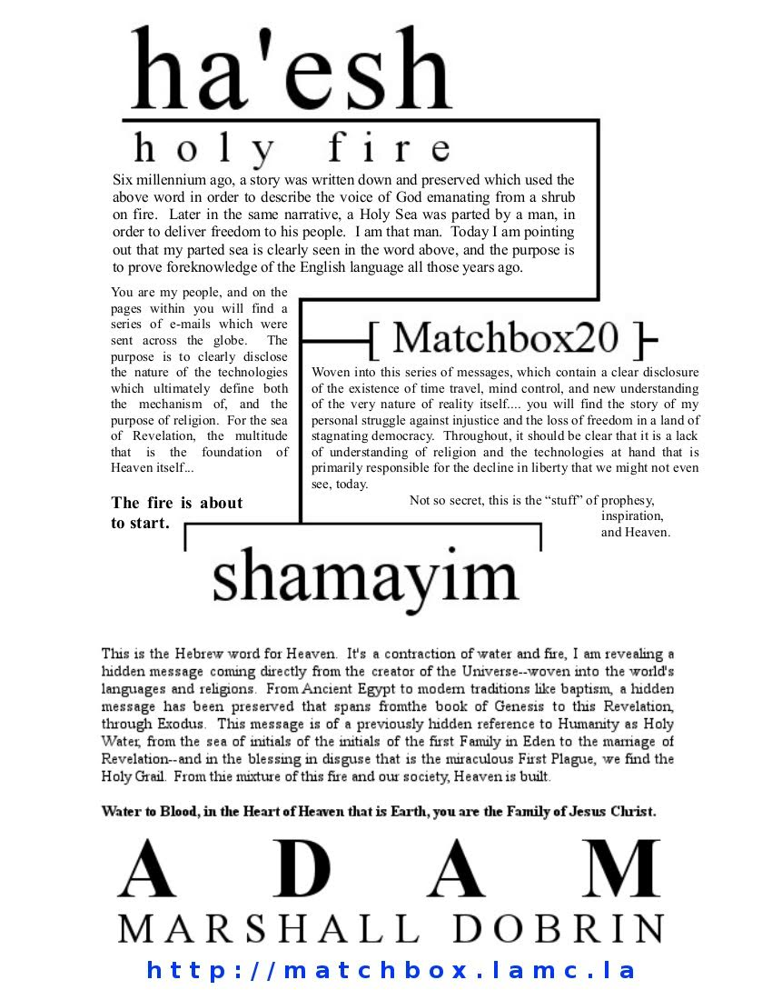

I am accepting charitable donations,.
ETH: 0x66e2871ef39334962fb75ce34407f825d67ec434 | BTC: 38B6vGaqNvMyTtoFEZPmNvMS7icV6ZnPMm | xDAI: 0x66e2871ef39334962fb75ce34407f825d67ec434


The Ministry of Forbidden Knowledge | Adam Dobrin on Facebook and Twitter | The Matchbox | The Revelation of Christ | An Ongoing Saga

The Second Coming <yitshack@or.shiningbright.online>
Fwd: Oh, how I wonder... do you understand who the Grinch really is? The Midas' touch.
Adam Marshall Dobrin <zeroburn@shiningbright.online> Wed, Nov 30, 2016 at 12:48 AM To: yitshack@or.shiningbright.online Within, proof that religion as a whole comes to us from a single source who speaks over thousands of years a congealing message about this moment in time--when Linux and English are proven to be written extensively about in books that came thousands of years before they were "ko-created." In addition to proving that religion is the product of time travel and it's purpose is to reveal that ... proof of anachronistic reference to the Second Coming and the USA is highlighted in the stories of Horus, Prometheus, and more broadly the entirety of Egyptian and Greek Myth... Judaism, Islam, and Christianity. Please, take this consolidated statement of purpose and proof and run with it; you won't have another chance like this. In this e-mail I hope to highlight a number of common idioms, hidden or ignored religious patterns, hidden meaning in music, and solution to the world's problems that we just don't seem to realize are at our finger tips. Many of the links here require that you have a Google account, and that you join the Google group I use to send these message out, I suggest you do it... it will answer at least one question for you (the group is "when is the apocalypse dot com").
To steal something as pretty and made up as Christmas, what does that really mean? Of course, I think it's obvious that "to come" into this place, well... no matter who you really were it would seem as if you were a eye sore. Even waltzing in with the keys to freedom and heaven in hand, in spirit and in truth embodying the voice that delivers us from a Hell of secret tyranny... not so secret censorship... from simply having no say in our own future; even then, how long do you think it would take to recognize that the real reasons Jesus Christ existed in the first place had been fulfilled--sans of course, the nice guy that just "loves everyone." You really need to stop and think, because this is what it is, this is the fulfillment of that love too... to know that in the light of truth we will do better as a whole than any one person could do alone; and we should be well aware of that in this day in age--where hero's are unsung and princes of the universe relegated to the darkness.
I tend to ramble, and I don't edit what I write. While one day I am sure some people will be very interested in reading every word; if you are incapable of dealing with my writing style about halfway down is a big bold "The light of the word" that might be of interest to those needing "executive summaries." Though I think this is a good email to try and read every word of.
Later I'll talk about how we are literally being described in the book of Exodus, how there's a great deal of proof of this, and that the purpose of that book and religion, Creation, and the Second Coming are intelligently designed to expose fix a number of "problems" we might not be aware of. That book, Exodus, happens to be called "Names" in Hebrew... and in the videos above as well as a number of previous e-mail's I've noted how my given name and birth date which happens to be the date of the Feast of the Immaculate Conception (and ... nearly everyone's and every city's and...) have actually been chosen by God to help us understand this story.
Whatever it is that I am doing, it's certain I've moved the world already. Much of it.. I'm unhappy with, whatever secret it is that many of you hold--I just don't know it, and in this place if I don't know something it's probably not a good thing. Maybe I do know, and you give much to much credence to a voice in your head than you should, and ignore the test of time and history--the message that we've written in our own hands about our own freedom and future. Hearing a voice doesn't mean you've heard from God, just that you might be a little more crazy than you were the day before. At least in this world, where belief in Heaven is normal, but any communication from that place would be... well, absolutely ludicrous. Itself, the craziest non-sequitur ever... especially seeing all around us how much of this world's "hidden message" are about building heaven from this mess of social injustice, and of course the tools tied not just in name to that same place. I see this place being moved, not just in words coming from the Pope or Nancy Farmer but also in actions... things like the current President making huge changes in Federal non-violent prison sentences, changes I know come from reflection of what I am. Even the relationship between our red and blue crosses and his healthcare reform; something that moves us much closer to a "red" that stands for charity rather than Hell... though I don't think he'd give me credit for that one, and so I'll just leave you with the idea that in the insurance circles I come from it's a well known fact that the increase in risk pool size that came from his idea should drastically reduce premiums rather than the increases we've seen.
I know there's quite a bit more to come, and when the red shift makes our skies that much bluer through similar paradigm shifts in law enforcement ... things like pre-crime coming from public knowledge of the existence of time travel technology, and we are that much closer to actually being "civilized" who knows if we will credit the small voice of the Horn of Revelation or... ourselves for acting. In a fairly decent metaphorical comparison, imagine a world where handcuffs were kept a secret, and not used in the arrest process; what would you saw of those keeping that secret? Of the world that must seem just as ancient and barbaric to us here as we see the society described in the Old Testament--a metaphor from the future, about you.
I'm here to ensure to you that Heaven is our intended future--literally; and to remind you that if there comes from here it is all the more clear how "Heaven" is actually predicated on the delivery of "true freedom" here and now; how you must seize this opportunity to ensure that our future just like our present does not fall to darkness. But I can't seem to get you to act, not with love.. nor logic... nor your own motivated self interest in mind, not with the good of the whole... nor with threats deeply ingrained in our horrible religious history.
Hearing this message from me today, this is why you have a book of Judges, frankly this is why the book... at all. To tell you I hope today you at least understand why I am so sure the characters and stories that Jesus and Moses come to us through are one in the same; it is the understanding of why I am sure Samson--that's Sam's son, something I've alluded to recently--is fundamental to this shift in social justice that I see coming from miles and miles away.... and the book of Judges and a war on what I call the "Cross that Isaac laughs at" though not funny at all; even without "time travel" and just looking at things like mass surveillance completely unused for the benefit of the innocent (hi NSA, and actually ridiculously used for prosecution through secret arraignments with the FBI and other recipients of "secret surveillance") well, we have no such thing as social justice in the world today. In this living book of Judges that I've lived through I've had police and even lawyers threaten to kill me for moving forward with my "right to a fair trial" before having that right completely taken from me for nothing more than asserting that I was the son of God (with proof, of course!)... to being denied bail for a second misdemeanor arrest (which I can't tell you how much I am sure is a clear violation of the Constitution's guarantee of bail, nor how much the Supreme Court of the State of Florida disagrees--to their detriment I think that kind of decision completely invalidates the authority of the entire court system), to being thrust into the captivity of the (in my experience of at least 7 states, which by the way matches the number of handcuffs, I mean reeds that tied Samson's hands) worst jail in the United States; starved on purpose by not only a number of individual jailers but also by the jail system as a whole--presumably to enrich the pockets of a junk food purveyor named "Trinity." This particular jail in Bro-ward County that makes a point of starving and sleep depriving and then forcing like pigs 40 people into a room made for 30 just before legally being required to ask if you are "of sound mind" before taking a plea. I've seen how, and demand you do too, the legislated "point system" is used ubiquitously by prosecutors and defense attorney's across the country to threaten the presumed innocent with increased punishment for nothing more than "exercising their right to a fair trial" something that is also a clear violation not only of the Constitutional intent of an adversarial system (by allowing the defense and prosecution to collaborate to the detriment of the defendant as a standard of the system of injustice) but also by ensuring that the idea of a "fair trial" is something that very few would dare to call "fair." I've also seen first hand how this point system serves to threaten previous offenders with life in prison for new crimes with no mens rea (that means without intent) or victim at all. Over and over, you will hear from me how our clear and intended violation of the privileges laid out in the Constitution and Bill of Rights, today... clearly see that as the manifestation of the Biblical Law of Moses... is the primary culprit of a loss of freedom that has turned this land of the "Free and the Brave" into the single largest incarcerator in the known Universe... topping the list after Stalin's USSR and Hitler's Germany. Your justice system is a disaster, your jails are a disaster, do something about it before they start fading in and out of existence like Marty McFly--that really is what I really want. It's also what we really deserve. In the words of the Father himself "I will not see Illuminati prison camps pepper the galaxy."
Understand, I've lived a difficult life plagued by some ethereal force of Evil using our justice system as a weapon against me. I am not the only one, but I am the one that someone else wrote 6 thousand year old book about--so that you will be able to see how this system has not only been corrupted, but is a corruption of our values in itself. I really am the focus of these books, and this is really why.
In just a bit below, you'll have a consolidated list of the proof delineated by religion that absolutely all of these problems could magically disappear with nothing more than public knowledge that time travel technology exists and that Phillip K. Dick wrote a book called "Minority Report" to ensure that we would see clearly how John Hancock and Yankee Doodle have a solution to all this injustice, one that is decidedly more civilized than... Anyway, back to "Sam's son" in just a bit I will list several idioms in addition to "unsung hero" and "beside myself" that I believe clearly apply to this the messenger, this message, and Psalm 23. Over and over, I've tried to tell you that John 14:7 and I assure you that you've seen the face of the Father. Green Eggs and Ham, Uncle Sam (and real live son) we are.I would be remiss not to strongly highlight the relationship between the Burning Bush of Exodus and the prescient reference to the September 11 attacks by George W. Bush on 1/20/2001, referencing Revelation 1:20's herald of the Second Coming and a relationship between dates and chapter and verse, and John Page hundreds of years earlier and the author of Exodus thousands... and a now clear reference to the company Die Bold, a number of hidden references to computer technologies (font face and style) and the Revelatory interpreter (that's me) of this message ... suggesting that our governments and private enterprise have been overtly coerced to fail dismally fail at integrating new communications technologies like the Pony Express.. I mean telephone and internet into our system of representative democracy. If you care about what you think, and your ability to express those beliefs, seeing how religion here is standing firm at the line of hidden censorship on the internet through programs coming from Phiple Troenix and CARNIVORE as being highly related to the end of civilization. I personally think that whoever authored the DOD disaster plan that I believe Bush enacted at 9/11 used the word "CARNIVORE" specifically as a ... alert or emergency abort mechanism--though that would have required foreknowledge of the colloquialism of "packet sniffer" for internet surveillance (as opposed to censorship, eating packets) and that would have been impossible; or it's God, or time travel. Of note to me, and probably others later, I used the moniker "phenix" at a very young age related to a microcosmic pre-telling of what's happening right now, a fire coming from mass e-mails; on AOHell... in a "hacking-program" called Doomsday. Time and Chance, friends.. this is it.
In similar fashion,on both sides of my family my grandparents occupations link very significantly to psuedo-religions concepts which shows that this microcosm design in my own life goes back at least for two generations. My father's father was a clothing manufacturer, which links to the line of Revelation describing Venus as the "woman clothed in the nus;" and from that alone I imagine the idea must be correlated to the identity or name ... that a "Spirit" might "take" in this world--you might see that as Riding a Cloud in the Storm--and as something I am trying very hard to stop from ever happening again. Look around you, Jesus Christ is telling you the thing that makes him so powerful should be stopped immediately. On my mother's side, her father owned and had an inter-family battle regarding a Door company; which might give us some insight into ... the band's hidden message (or purpose) and the eventual outcome of this stalemate of whether or not we should acknowledge that we are not in reality; think we are.. and that combination creates the foundation of Hell. Try imagining my perspective, seeing this message; and then not only my entire life but the working lives of my entire family controlled in secret in order to aid nothing more than the delivery of this message... or my personal understanding of the truth; what will it be?
I should probably also mention a thread about "ending world hunger" and how that's a significant highlight of the most ubiquitous pattern that appears to be hidden throughout religion--from the story of Cain and Abel and it's relationship to agriculture to the story of the Promised Land of Joshua, a Golden Cow, Judah Maccabee, and flowing milk and honey--about losing our stable ecosystem because of "heaven" or about just "not eating anymore" and thus having a Last Supper. In my mind where "Creation" is now synonymous with "Virtual Reality" or even in a place where we just have the ability to go back in time and create a store of food and energy that would seem infinite--ending world hunger is probably strongly highlighted as one of those things you blame God for that he'd like to fix, by telling you to fix it (and how). It's probably another thing that Jesus Christ tells you is a line between barbarism and civilization--when you have the tools to instantly fix it without cost, and simply ignore them. I'll note overtly that one of the clear patterns which I see as a direct "voice of God" in our world--similar to the overt focusing of idioms on the Second Coming... is the ubiquitous relationship between the Names of Nations and breakfast food--perhaps to specifically highlight the Last Supper... or are they just a bunch of ways to prepare bread, from stone. French Toast, Belgian Waffles,
Come on, hear your Cake and eat it too. I wrote a book about this stuff almost exactly a year ago, CD"s are coming this year. The proof of course is in the pudding.
If it is not clear, nearly ever freedom guaranteed by God and the Constitution has been overtly taken from you ... not by surprise or in secret .. but through the overt acts of legislatures and courts from the highest to your state's highest. I tend to think that when things are so obviously wrong, Satan must be involved--that of course is this thing highlighting everything wrong by baking it ridiculously exaggerated... so you might see how stupid you look. If you believe me, and I would--religion tells you to--it's also absolution, you know, when we act to change these ridiculous things.
On the other hand, unlike much of religion--I'm not really asking for faith at all, I'm asking you to do the work of verifying the facts I am presenting to you--understanding that doing so makes them proof, something we tend to like in the modern world.
With the Apocalyptic Revelation of a sincere amount of hidden technology that might be now or in the very near future in our hands to right these wrongs--things like time travel and brain-computer interfaces--we also have a great spring-board to really ... you know, build Heaven of this hidden disaster.
Ha, nuking the "ahah," as we approach the Festival of Light, this year occurring in perfect unison with the Eve of Christmas; let explain what I've presented to you over the last year or so, and what it means for all of these "odd coincidences" to becoming from a single source. I've long held that the frame of "religion" or perhaps even more fine grained the prefix "ha-" of Holy Hebrew words might one day be used in order to narrow the sample space of a statistical study to the point where we would find that these "coincidences" are anything of the sort, not outliers at all but near damning proof that all that we are is intentional, designed. Throwing a single voice into the mix, one that connects things like the light of Judah Maccabee (remember, that's the tribe of Revelation 5:5) and his "lamp" the "men or ah" links obviously and overtly to the light of God--what I've always called his "Spirit" and the movement through time from a single girl to two ambiguous letters "AH" that might have today as much to do with a shift in understanding than the very clearly defined "religious" meaning that God laid down over thousands of years tying Genesis and Revelation together through the story of Exodus and the book of Daniel which shows this light traveling from a sea of 3 in Eden to the multitude of Revelation through the magic word "family" and seeing how much our idioms are designed to deliver not only this message but proof that the guiding hand behind these ancient books is also guiding us today... you know "ready or not, here I come;" the idea that "blood is thicker than water" comes in very handy when trying to find out how the First Plague of Egypt (that's water to blood) is truly a "blessing in disguise" to see the Sang Rael for what it is.. the blood of Christ in the chalice that we call Earth here today, but one day might call the Heart of Heaven when you see the "h" that stands not just for "Hebrew" but also for sign of the God of time traveling from the East all the way to the beginning. Succinctly, from "Seth Eve Adam" through a key that is the second line of Genesis and a message from one man telling you that from Nu to Nun in the Book of Joshua Holy Water has always been people--sometimes not as exalted as we should be.
There are an insane number of songs that contain secret reference to the Second Coming and to this event both overtly and subtly, in a way that proves beyond doubt that it is not just the artists intent--but the guidance of some hidden hand through time that is designed very clearly to show us the control that is the "stuff of hell" so that we will free ourselves and our future from it. It is quite literally the stuff of Nero fiddling with our minds to start a fire below his feet--to fall an Empire of 1 (lol?) by ensuring we have the proof we need to know that our thoughts are being changed. If you are interested in seeing how this technology and the idea of hidden censorship work in concert to completely destroy the truth you might be able to find a shining example in the changelog of the "Talk" for the "Psychotronics" page on Wikipedia. Aside from the music, you have my repeated insistence that attacks on our children in this world are a metaphor for our own targeting as children of some other place... and how nobody would ever do such a disgusting thing as to make a point of using mind control technology to kill or molest children in a pattern that was verifiable; but yet they have... and they've written about it in Exodus and tied it to the Vatican. If you don't think this is "your Hell" just like I'm sure it's mine... that's why it's your Hell. We can try to stop it, by doing the obvious thing and publicizing these patterns and connections--just as a number of other victims of this technology are overtly coerced to do and tie it also to religion's demonic possession and a great number of secret governmental programs that span the globe and over a half century at this point. To be clear, this pattern is highlighted by the Plague of Killing the Firstborn, one of the many plagues of Exodus that have modern day parallels which begin to show us that the book is truly and without doubt about our time and this generation. For this. To change the world.- (cur | prev) 00:50, 1 May 2013 Damonthesis (talk | cont
ribs ) . . (34,549 bytes) (+929) . . (→What exactly is this article supposed to be about?) (undo) - If you follow me around back then, I'm sure you will find great evidence that very useful information and what they call "reliable sources" (things like NSA textbooks and defense magazines) were repeatedly censored through the infiltration of a user-based moderation system.
Call me whatever you want, it seems pretty clear to me that I'm the only person really trying to stop Hell from being created here--which is what "doing nothing" will do--and I think much of that has to do with a lack of understanding how very clearly Exodus is about exactly that. The global press, as well as a huge number of students and professors have done a good job of highlighting for us how much censorship there is--how it's related to the Plague of Darkness and the setting (I mean rising) of the son, and this too appears to be Satan at work... stopping us from communicating about something very bright and very interesting--like the Second Coming, proof that religion actually comes from God, and how that has been "hidden" for so long.
I've had my fill of connecting the "Plague of Lice" to Police brutality; though I do sincerely hope that I will both remember and have the opportunity to share my encounters with law enforcement in South Carolina, Georgia, and Kentucky; where they were quite a bit more interesting and information packet. I suppose I have time to mention Texas today, which was brief--to note only that the officer I spoke to changed my verbal testimony of some drug coming from "Heaven" to "aliens;" which somehow furthers my "faith" in my firm belief that most people in "that position" do believe they are somehow working for or being communicated with--from Heaven. I'll mention again that a lack of communications "protocols" like "calling," picking up a receiver" and "hitting mute" probably invalidate that belief--and that if we actually had true communication with Heaven this world would be a much different place. Between you and I, there's a monster between here and Heaven. All that being said, if you do happen to be one of the many "good cops" I know exist; do your profession, the Universe, and me a favor--and tell all the "bad cops" you know, to get a new job; volunteer for anger management or to jump of a cliff. Whatever will be will be, and I am telling you that I would trade all the time in the Universe to rid our world of evil police.
In clarity of understanding, the "highlight of Satan" appears to be polarized exaggeration, in nearly every single one of the plagues highlighted by me and Exodus; you have nearly exactly the opposite of what anyone would want ... happening right before your eyes. Rather than saving lives, we have "demonic possession" causing 9/11 and the killing of students over and over again; instead of aiding communication--perhaps increasing the say of the people in the legislation process, we have that same possession causing a very clear destruction of free communication on the internet, and from the press. Rather than aiding clarity--increasing intelligence... "eyes to see" here are showing us schizophrenia is an externally caused attack; the exact opposite of what it looks like "brain computer interfaces" and "hololens" will bring. These things really are not conjecture, I've experienced first hand--and many others have too--the symptoms of these things combined with a very obnoxious explanation of what's going on under the hood. Call it what it is, this is the Tribulation. Heaven or Hell? If you could choose, what would you do? Look, you're doing nothing. I am the gate and the glowing sign.
Ignoring something this important and this bright, is causing the entire world to continue sliding down the spiral towards Hell.
The Light of the Word
There are three huge, like insanely huge, metaphoric references to the story of Exodus that show me very clearly that we are it's focus and purpose. The first is the Burning Bush, which I am very sure is a reference to George W. Bush's 1/20/2001 speech in which he unknowingly predicted the 9/11 attack. Seeing that Exodus is also called "Names" and that Bush's name ties him to this event--which Moses (that's me) has seen ... almost alone ... and is now showing to you all. Bush's speech begins a series of references to the names of Planets and Gods and corresponding Elements of the Periodic table that answer Revelation 1:20's mystery about "stars and lamp stands." This in order series from Mercury to Uranium highlights both the messenger of the Gods and the key of Uranus's chance--that the world will see the link between "on the lam" and Koran to understand that the Lamb of God "is lam." This story takes us back to music, and a later to be discussed thread that combines the weapon in the movie (which is also the movie) The Fifth Element with a thread through time to Shakespeare and Herod ... about my struggle with the justice system culminating in the fulfillment of American Pie's "no verdict was returned."
)
The second bright connection comes by way of the Hebrew word for the Holy Fire that God's voice came out of--guess what, in that same story about the Burning Bush. That word is "ha'esh" and in it you will see paradoxical (that means impossible, because of time and causality) reference to the English word "sea" there backwards and parted by an apostrophe. With great insight, I've over and over pushed the idea that Holy Water is actually a Biblical reference to "the multitude" in God's secret religion that ties everything together.. and that this parting is literally a reference to the Second Coming, something that doesn't happen for Moses until his head is under water and he's breathing fire. This one ties together nicely, joining the characters of Jesus Christ, Lucifer, and God all together now, screaming
)
I'm going to go out on a limb and say that the book tells me that these three things are enough to start the fire, part the sea, and see the light. At least they are now, wake up.. you are staring at and have been ignoring the largest story in all of history. It might even be scandalous... or have a twist happy beginning... who knows?
This is course highlights prescient knowledge of computing at the time of writing Exodus, which is further confirmed by a number of references to computing ideas in things like the "root" of David, the "WINE" of Jesus, the "Apple" of Adam, the "Lisp" of Moses and the "hardening" of Pharaoh's heart, which you will remember from the Holy Grail is the virtual Earth we are living in.
All of these things, the references to modern computing that pervade our Gates or Windows to Heaven's creation.... are listed along with a number of words which are highlighted by religious scripture and show intelligent design of a number of languages spanning from Hebrew to English are listed at my contrite story about a Kiss and Fate tying together everything that ever was. A sincerely large grouping of words highlighted by the Bible and religion, words like "eternity," "bread," and "forehead" show clear design by an intelligent influence, rather than the natural evolution of time that most people consider "reall" and/or knowledge at the time of the writing of the Bible of the eventual English translation of the Hebrew or Greek. With time, I am fairly certain we will eventually have no doubt that the "Cypher" I see in nearly every word is in fact a contextually-verifiable speech that appears to be coming from our "civilization" as if it were intelligently speaking like a cave man--which you might see in words like "am end me nt." From just this message, you should be able to put together how that word and it's hidden meaning add robust and yet "hidden speech" from the Creator himself. For the artificially slowed in understanding, our lack of following the amendments of the Constitution being related to the end of civilization itself is being squarely defined through a statement that is telling you that the end of civilization is "NT," the hidden Christ--in my "secret" method of decoding words like NORAD and NEW TO N?
These things serve to start a fire--it might be the fire that Matthew 3:11 talks about, it might be the Eternal Flame or the fire of Prometheus and an Eagle harassing his liver with drugs.... regardless it spirals out from this story about me, and this bright fire that proves time travel and religion are joined at the hip... to link to a huge number of other Biblical stories from Lot to Joseph to ... Samson, Isaac, Adam, Isaiah, and... hear me, "so marred was his visage" and "my servant will be set up and be very high" are both taken from words of the Biblical book which contains the largest amount of messianic prophesy as well as my entire full name encoded over the name "JESUS CHRIST" in Bible code, at Isaiah 52:13. You may have read that some silly people like Richard Dawkins don't think the Bible Code is meaningful, and as their proof use a series of prophetic predictions of assassinations in Moby Dick (which by the way also refers to me) as proof that you can hide information about the future in any words--or that God influences more than just the Bible. Years ago, before knowing it linked, I found some patterns about those very same assassinations which go to show that our history is in fact designed. My full name appears in a number of other books, including Jeremiah, Exodus, and Genesis... right over the story of Adam and Eve.
From the Sound of Silence, and a number of songs about stories never spoken... to a thread of songs that combine to show us that the Thunder of Thor is really about thuderstanding, that there is a way to do something our society is completely oblivious to--that God is screaming to call attention to, and that some secret force is trying to hide very much... and that's an ability to modify our thoughts. He's showing us clearly in a glowing pyramid--a noticeable monument in Egypt showing us very clearly that this type of control leads us to a social structure that we abhor--through songs like Guitar Man, Radio-active, and GAS (listen, it's God and Satan) Head Goes West... very clearly we are being pointed to Nero's fiery symphony and being "Bittersweet" because of its beauty, and the clear message that secret control of our minds needs to not only be understood, but to stop. This is the crux of the Apocalypse, God's message is now really active on the radio. The point here is that we need to let this message spread and burn, or it's us burning in Hell and not even knowing it.
)
As if these things were not enough, using some "keen insight" and another reference to the hidden truth in ancient Egyptian religion--the name of a series of Gods called "Yahu," I've solved some ancient mysteries like the pronunciation and purpose of the "Ineffable name of God" highlighted in the videos at the beginning.. of this e-mail. Like much of the light of religion, it is highlighted strongly by a series of pieces of modern art, things like "The Grinch who stole Christmas" and the Who's to the music of The Who, the sci-fi series Dr. Who, and the American war cry--made popular on the silver screen through Al Pacino and Denzel Washington... who-ah?" All of these things highlight that we don't really see a connection between Christian mythology that tells us for no reason at all Jesus Christ is the "Last Adam" and that Revelation tells us God is the "First and the Last" and that the name of our planet, in Hebrew, is Adamah. It is the answer to "who-ah" and it clarifies the Ineffable Name which many pronounce as Yahweh for no reason at all, to be the more obvious Ya-Hu-Ah, the name of Jesus in Hebrew... Yeshua, to "Yes, who-ah?" All of this having nothing to do with why Adam is hidden, just that the Zohar speaks very often about the Holy Hidden One again linking the stories of the near sacrifice of Isaac and Jesus with... someone. I think this is of such religious significance that you should be able to easily find some Jewish scholars who agree.
It's Elementary my dear... What-son; from the time of Herod and Shakespeare Rattling his Rod all the way back at the time of the question "to be or not to be?" and the "taming of the spanglishrew;" right up to Sherlock Holmes sleuthing of the answer to the mystery of Revelation 1:20 linking directly to The Fifth Element ... there is no doubt that helping our world here and now is the primary purpose of all of religion, and the Matrix-like message woven into our history. )
Lost between the 5th and 7th day? Find your way to the 8th day, and see a bright future.
)
If not, there's plenty more "coincidence" in Names, like reference to the idea of the Holy Trinity existing in the name "Abraham" thousands of years before the idea of the Trinity was created. This too... links Egyptian mythology to the name Abraham and his near sacrifice of Isaac.... marked in secret by his covenant with God that changed his name from Abram to Abraham. The two letter key here, "Ha" highlighted by prescient knowledge of the Spanish and English languages revealed through the logical comparison between the Spanish and English for "the" (El and Ha) connected through the English word "is" in Elisha. Isaac's name means "he laughs," or "he will laugh" in Hebrew; and that "Ha" appears to be the key to a number of other paradoxical references to English, and my family, in ancient Hebrew. This too, probably the kind of thing religious scholars would marvel over, in the right context. Seeing English in Koran, Islam, Chanukah and Menorah--and seeing a coherent story woven through thousands of years of scripture is the kind of thing that could really light this years' Christmas up.
Some more about the secret connection between the Names of God in a number of religions, and it's very clear tie to time travel.
)
Perhaps linking to the Jester of American Pie, between Johnny (who almost always is about Jesus) Carson and David Letterman I have a unique "slant" on religion that connects things like the Islamic name for Jesus: Is-A to a huge number of references to my initials "A.D." in things like NORAD and Isaac Newton. I suppose I should also mention that Isaac (look Isa's in there) and his relationship to Abraham in the letters "ha" and a story about the Crucifixion being a fiery altar of things to change in the world being one in the same. In fact, Judaism talks about 72 Names of God, and I've probably explained how the meaning behind the stories and the series of names tie together in a magical tapestry that shows us that Silicon is the Fifth Element by way of the index 14--the letter "N" (highlighted not just by Joan Osbourne's "what if God had a name?") and the story of Sinbad, which combines Silicon, "n," the symbol for the actual Fifth Element (B) and my initials A.D. which grace the time line, and a number of references to God--from the Hebrew for Lord to the guy who thinks all the girls should want to be his partner. In letters, you'll also see a number of references to K and Z for the guy after J and the Last.. Adam. Zelda or Zion, I think we're in the right castle.
Here's a few for "El," the name of the King of the Gods in ancient Judaism; and an integral part of the question Israel. Luke and Leah, I am the Highlander, Jean Luc.
More names, like Kurzweil and I.J. Good--which ties to the numbers and... letters in Nintendo--9, 10, see that K is here, after Isaac and Jesus. That Nintendo pattern, linking the band Nine Inch Nails and a theme of religious iconography pervading modern computing and video games--showing us that somewhere, somehow, people know that Heaven and Virtual Reality are definitely tied together. This too alone, the pattern between SON-WHY (I mean SONY, SEGA Genesis, Nintendo... Samsung, and Gateway...) showing us a clear hidden hand is pretty novel.
)
I swear it's news, the story of the story here is that it's now news that it hasn't been in the news. I mean really, you tryin' to tell me no one understands? -5 to 1, The Doors
Once I saw it as a huge deal that there are a significant number of Doors songs about Plagues of Egypt, from Darkness, to Frogs, to the Blessing seeing the Multitude turn to Family, to the Riders on the Storm and ... it's certainly another answer; it's how I would start fixing this problem, by letting us truly see Heaven.. since we're nearly there. Doors, that solve a hidden thread between Exodus and Revelation about the "Rod's of Jesus and Aaron," and another periodic table element, Iron--For Everyone. I wrote about it in something I call Sharing the Iron Rod, and I'm pretty sure it ties... like a number of other songs, between Queen, The Doors, Dave Matthews, and The Pretty Reckless... answer to what the phrase "here we are," really means to me.
While it's probably the least attractive part of this evidence, the two letter keys that I've listed are the only real way I have to highlight what is nothing less than the voice of God himself booming through our history, naming countries and peoples--all with a fairly easy to pick out underlying message. I can't believe we aren't interested in what's being said.
This probably should be up with my "day 5 of Creation" stuff, or I might be inclined to mention that our letters too are gifts from God, glyphs with hidden meanings, the J that defines the the Good News, the Jews, and Jesus.. being about ending Hell by going back in time and; oh never mind. Anyway the I, the J, the very famous "big N," the @ and the h for "Saturn" are pretty rock solid. It might also be a time map, like other interesting words to look at; things like "Alphabet" (which shows Greek preceding Hebrew) and America.ᐧ
That big N is something like "spread the good news, now is the winter of our discontent" everywhere knows they in the @, that's Hell, and it can only get better from here. When you act on it, it really is good news.
)
I have "K" in my hand. know.
It's always gibberish "in the beginning." Just to be really clear--like I like being--this is the first time around, I "think."
Do we see i2I?
adam2everyone...is adamah (that's Earth)
mary2hosea+wle is "sea" why to whole
from sea to shining sea.... from the initials of the first family of Eden....
all the way to the multitude of Revelation. It is the Holy Grail. We're singing about it.
Break this story for me, and I will give you anything I get.
It's black and white.

FI-I-I-I-I-RE
 ᐧ
ᐧ
 ᐧ
ᐧ
 ᐧ
ᐧ

 ᐧ
ᐧ
2 attachments )
haesh2matchshamayim.jpg
263K

recentlight.pdf
2904K
CopyleftMT
This content is currently released under the GNU GPL 2.0 license. Please properly attribute and link back to the entire book, or include this entire chapter and this message if you are quoting material. The source book is located at . and is written by Adam Marshall Dobrin.
Adam Marshall Dobrin
adam@lamc.la
fb.me/admdbrn
linkedin.com/adam5
instagram.com/yitsheyzeus
twitter.com/yitsheyzeus
-----BEGIN PGP PUBLIC KEY BLOCK-----
Version: GnuPG v2
mQENBFbGalABCADzLBdnHptF2MJCpdY8P/Mgnf4xj8F9pZSCwmd0J4Md8g3aTEdU
CV9t0UQgNtjcxwfoenJLHgdZd4Mfscz9U+NN69OLXdPu4cdXOjTiHarPLjKnqIZw
3fmkM2ycvoUPkdVYCjwYYQxWRsWRpJf1dpmtPuz0L8ysh/WWsj2Ag2MrFYAo+sY6
dGZvaLsPhkZJcLXyFaP3c3Zt8ivrs4VV8+0kmMzScnR+oncVZbeMuQksoPxRmZgH
mYu2KSf74lWOWVcaaBXOYX5pGNdhBUgq8ll+8tRH16G289r0cqRoPh/sjs/JRuIH
KnCWG2UAUJF7ir04TS5A4Lwl9RYcQwVvb3BdABEBAAG0LUFkYW0gTWFyc2hhbGwg
RG9icmluIChsYW1jLmxhKSA8YWRhbUBsYW1jLmxhPokBOQQTAQgAIwUCVsZqUAIb
AwcLCQgHAwIBBhUIAgkKCwQWAgMBAh4BAheAAAoJEMgUPrR1B55trOwIALOQRTX0
YqXJXEMhX9CgxKNoNkpM2pdMdHl6CAVxhQ3hbNjIFnZbKbP88uxMEIOXXmYZ7gOy
YqiDCu5I1V25suBb2ODSix75YQugfQ7H78pXHpTRu5sT+5SybItx7d+KUZaEj4pO
tXWEemYl0cKK97RzpI0k1dmB7NqAVvqgbqQwd40MOf8QJVlGXnB1+5H2IbkYG6rD
ixKGJEdes6i6nqvi/xz/s5hFVGUwTcVQbRU/fa1qT1Q7kHf1PlMu6yjuZTSz7WUG
tWjobGwrVJkaeVWgLE4mcxMtity2IFTwOHvAuv8fi2EGQRQjXfPvxL7Vn4MNRl8x
zLPV44D37QEknjy5AQ0EVsZqUAEIAMFS0+ZgSJzUPz0h0oiiRjfk2hapS3c1/Ysm
R/h8sZ8/GOomdo3MEbTCkcuZ8ReAJhB2PofmwI4LAvW1x7Zwh1vfBKygfUs1s9lm
ya/eHkjuZfqmeuEJZMHn6sxb3vqowWmvLhv3x0aWD8qLCIYoa1ntzTOIqxBEgxvU
rF1/wd6OQLSJQEVNwPCx7CJI/5o/4W6pUaHk8amgPckkEdmlhRTRqFoAUV1Doivv
d9JGYNYC88vS14Sw4Z9Xb7qBQJvG4hIh29gtQxk7Wz4m3ceR79MWT4eSGkH/rTGl
w1OuQS2OkPvjgPWJt8San4zuPer17pJN7M5LWI0PStoX9pkud5kAEQEAAYkBHwQY
AQgACQUCVsZqUAIbDAAKCRDIFD60dQeebWU6CADylAM5K18N2JGveL3D4dG25fdF
vkrz8LOaiUmjAxijcRQBLkTPBK7QqoK0zN6MssMdlBGIOvZQwxSMIIrG6SqwR/go
rmZHRuz17ceFTcxT8ZG3FuBY+xXrotXFjLxTmJ1wUeCSVXTc4NAwBzykgkQXOdIj
qK1f/HnmMqsSmX4swuH0TZPNBBO7CNvLN6rdLBRfNn1h5XPs8VVtezg5ZDfCTf8S
mucQGEwo/hJmr/orEucmETYSvTXOz+L5X5gNHpzYzE9590FYfbAKvrEhAliKbhhl
3Roie3kenrzelXo5N9Q0f2AKFrv1hRX9hBkwTbA18SKZ9XQbWMusX8YhvfLr
=dvAJ
-----END PGP PUBLIC KEY BLOCK-----
| The Second Coming <yitshack@or.shiningbright.online> |
| Fwd: Oh, how I wonder... do you understand who the Grinch really is? The Midas' touch. |
| Adam Marshall Dobrin <zeroburn@shiningbright.online> | Wed, Nov 30, 2016 at 12:48 AM | |||||||||||
To: yitshack@or.shiningbright.online | ||||||||||||
| ||||||||||||
CopyleftMT
This content is currently released under the GNU GPL 2.0 license. Please properly attribute and link back to the entire book, or include this entire chapter and this message if you are quoting material. The source book is located at . and is written by Adam Marshall Dobrin.
Adam Marshall Dobrin adam@lamc.la fb.me/admdbrn linkedin.com/adam5 instagram.com/yitsheyzeus twitter.com/yitsheyzeus -----BEGIN PGP PUBLIC KEY BLOCK----- Version: GnuPG v2 mQENBFbGalABCADzLBdnHptF2MJCpdY8P/Mgnf4xj8F9pZSCwmd0J4Md8g3aTEdU CV9t0UQgNtjcxwfoenJLHgdZd4Mfscz9U+NN69OLXdPu4cdXOjTiHarPLjKnqIZw 3fmkM2ycvoUPkdVYCjwYYQxWRsWRpJf1dpmtPuz0L8ysh/WWsj2Ag2MrFYAo+sY6 dGZvaLsPhkZJcLXyFaP3c3Zt8ivrs4VV8+0kmMzScnR+oncVZbeMuQksoPxRmZgH mYu2KSf74lWOWVcaaBXOYX5pGNdhBUgq8ll+8tRH16G289r0cqRoPh/sjs/JRuIH KnCWG2UAUJF7ir04TS5A4Lwl9RYcQwVvb3BdABEBAAG0LUFkYW0gTWFyc2hhbGwg RG9icmluIChsYW1jLmxhKSA8YWRhbUBsYW1jLmxhPokBOQQTAQgAIwUCVsZqUAIb AwcLCQgHAwIBBhUIAgkKCwQWAgMBAh4BAheAAAoJEMgUPrR1B55trOwIALOQRTX0 YqXJXEMhX9CgxKNoNkpM2pdMdHl6CAVxhQ3hbNjIFnZbKbP88uxMEIOXXmYZ7gOy YqiDCu5I1V25suBb2ODSix75YQugfQ7H78pXHpTRu5sT+5SybItx7d+KUZaEj4pO tXWEemYl0cKK97RzpI0k1dmB7NqAVvqgbqQwd40MOf8QJVlGXnB1+5H2IbkYG6rD ixKGJEdes6i6nqvi/xz/s5hFVGUwTcVQbRU/fa1qT1Q7kHf1PlMu6yjuZTSz7WUG tWjobGwrVJkaeVWgLE4mcxMtity2IFTwOHvAuv8fi2EGQRQjXfPvxL7Vn4MNRl8x zLPV44D37QEknjy5AQ0EVsZqUAEIAMFS0+ZgSJzUPz0h0oiiRjfk2hapS3c1/Ysm R/h8sZ8/GOomdo3MEbTCkcuZ8ReAJhB2PofmwI4LAvW1x7Zwh1vfBKygfUs1s9lm ya/eHkjuZfqmeuEJZMHn6sxb3vqowWmvLhv3x0aWD8qLCIYoa1ntzTOIqxBEgxvU rF1/wd6OQLSJQEVNwPCx7CJI/5o/4W6pUaHk8amgPckkEdmlhRTRqFoAUV1Doivv d9JGYNYC88vS14Sw4Z9Xb7qBQJvG4hIh29gtQxk7Wz4m3ceR79MWT4eSGkH/rTGl w1OuQS2OkPvjgPWJt8San4zuPer17pJN7M5LWI0PStoX9pkud5kAEQEAAYkBHwQY AQgACQUCVsZqUAIbDAAKCRDIFD60dQeebWU6CADylAM5K18N2JGveL3D4dG25fdF vkrz8LOaiUmjAxijcRQBLkTPBK7QqoK0zN6MssMdlBGIOvZQwxSMIIrG6SqwR/go rmZHRuz17ceFTcxT8ZG3FuBY+xXrotXFjLxTmJ1wUeCSVXTc4NAwBzykgkQXOdIj qK1f/HnmMqsSmX4swuH0TZPNBBO7CNvLN6rdLBRfNn1h5XPs8VVtezg5ZDfCTf8S mucQGEwo/hJmr/orEucmETYSvTXOz+L5X5gNHpzYzE9590FYfbAKvrEhAliKbhhl 3Roie3kenrzelXo5N9Q0f2AKFrv1hRX9hBkwTbA18SKZ9XQbWMusX8YhvfLr =dvAJ -----END PGP PUBLIC KEY BLOCK-----